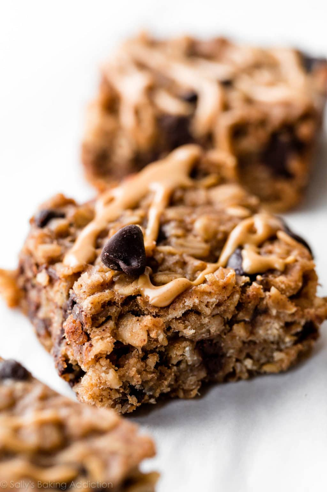

HOME
Peanut Butter Banana Chocolate Chip Oatmeal Bars

Description
These bars taste great and are a great snack. They're portable too!
These bars are especially good if you're a fan of oatmeal cookies, since the main ingredients are oats, bananas, and peanut butter.
- 1 Cup Mashed Bananas
- 1/2 Cup Peanut Butter
- 1/4 Brown Sugar
- 1/4 Cup Applesauce
- 1/2 Cup Almond Milk/li>
- 2 1/2 Cups Gluten-Free Oats
- 1 Tsp Baking Powder
- 1/2 Tsp Salt
- 1 Tsp Ground Cinnamon
- 1 Tsp Vanilla Extract
- 1 Cup Semi-Sweet Chocolate Chips
- Preheat Oven to 350 F
- In a large bowl msh the bananas. On medium speed whisk in the remaining ingredients
- Pour the mixture evenly into the pan and bake for 25-28 minutes
- Remove from the oven and let cool for 30-60 minutes. Place into refrigerator for 1 hour until chilles
- Remove bars from the pan and cut into bars